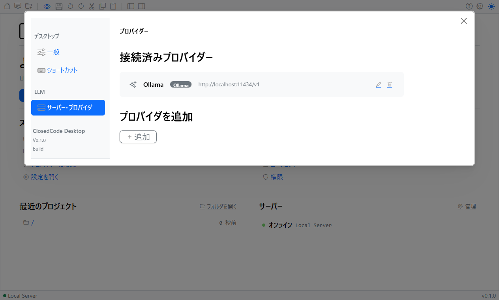
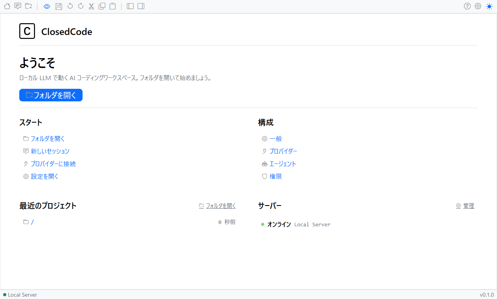

マニュアル
vanilla-closedcode の操作マニュアルです。ローカル LLM 専用の Electron デスクトップ版 AI コーディングエージェントです。あなたのコードとプロンプトは端末の外に出ません。

インストールと起動
- 最新版リリースから OS に合ったインストーラをダウンロード
- Windows:
vanilla-closedcode-desktop-windows-x64.exe - macOS (Apple Silicon):
vanilla-closedcode-desktop-darwin-aarch64.dmg - macOS (Intel):
vanilla-closedcode-desktop-darwin-x64.dmg - Linux:
.deb/.rpm/ AppImage
- Windows:
- インストーラを実行 (Windows はインストール先・スタートメニュー登録を選択可能)
- スタートメニュー (または Launchpad / アプリケーションメニュー) から「vanilla-closedcode」を起動
本アプリは Electron 製です。初回起動時はモデルやプロジェクトが未設定のため、ホーム画面で「Open Project」と LLM 接続先の指定を行ってください。
開発版から起動する場合
npm install
npm run dev:desktopパッケージ済みアプリを生成する場合は npm --prefix packages/desktop-electron run package を実行します。
ローカル LLM サーバーの準備
vanilla-closedcode は localhost のローカル LLM サーバーのみに接続します。外部クラウドプロバイダーへの送信はランタイムレベルでブロックされます。事前に下記のいずれかを起動しておいてください。
- Ollama —
ollama serveでサーバー起動 →ollama pull モデル名でモデル取得 - LM Studio — ローカルサーバー機能を有効化
- llama.cpp —
llama-serverを実行 - vLLM / Jan など OpenAI 互換 API を提供する任意のサーバー

http://localhost:11434/v1) を接続済みプロバイダーとして登録します。基本操作

- プロジェクトを開く — メニュー
File > Open Project...(macOS は Cmd+O) で作業ディレクトリを選択 - 新規セッション —
File > New Session(Shift+Cmd+S) でその場で新しいチャットを開始 - 新規ウィンドウ —
File > New Window(Cmd+Shift+N) で別プロジェクトを同時に開ける - サイドバー切替 —
View > Toggle Sidebar(Cmd+B) でセッション一覧の表示/非表示 - 戻る・進む — Cmd+[ / Cmd+] で履歴を行き来
主な機能 (Agent / セッション / プロジェクト)
Agent モード
Tab キーで Agent を切り替えできます。
- build — デフォルト。フルアクセスの開発用 Agent。ファイル編集とコマンド実行が可能
- plan — 読み取り専用 Agent。ファイル編集を拒否し、bash 実行前に確認。コードベース探索や変更計画用
- general (サブ Agent) — 複雑な検索やマルチステップ処理向け。メッセージ内で
@generalと入力して呼び出し
セッション
- セッション一覧 — 左サイドバーで過去の会話を選択。プロジェクトごとに分離されます
- 前後のセッションへ移動 — Option+↑ / Option+↓
- セッション再開 — 一覧から選ぶと履歴とコンテキストごと復元
プロジェクト
- プロジェクト切替 — Cmd+Option+↑ / Cmd+Option+↓ で最近のプロジェクトを巡回
- 複数プロジェクト同時操作 — 新規ウィンドウで別プロジェクトを並列に開ける
ファイル編集 (エディタ・タブ・検索置換)
ファイルツリーでファイルを選ぶと、内蔵の CodeMirror エディタで開きます。複数のファイルを開くとタブで切り替えられます。
- タブ — 開いたファイルはタブとして並びます。タブをクリックして切り替え、タブの閉じるボタンで閉じられます。未保存の変更があるタブを閉じようとすると「保存しますか？」の確認ダイアログ (保存 / 保存しない / キャンセル) が表示され、誤って変更を失うことを防ぎます。
- 新しいファイル (タブの「+」) — タブバー右端の「+」は、ディスク上にファイルを作らない新規の未保存バッファ (「untitled-1.md」など) を開きます。初めて保存するときに「名前を付けて保存」ダイアログで保存先とファイル名を指定し、保存後はその実ファイルのタブに切り替わります。保存せずに閉じれば破棄され、ファイルは残りません。
- 編集モード切替 — ツールバーの編集モードボタンで、閲覧モードと編集モードを切り替えます。アイコンは現在のモード (鍵 = 閲覧、鉛筆 = 編集) を表します。
- 保存 — ツールバーの保存ボタンは編集中のみ表示され、未保存の変更があるときだけ有効になります。未保存ファイルを保存すると、保存先を選ぶダイアログが表示されます。
- 元に戻す / やり直し / 切り取り / コピー / 貼り付け — ツールバーの各ボタンが編集中のエディタに対して動作します。
検索・置換
ツールバーの「検索・置換」ウィジェット (Ctrl/Cmd+F でフォーカス) で、開いているファイルを検索・置換できます。VS Code 風の操作に対応しています。
- 3 つのトグル —
Aa大文字と小文字を区別、ab単語単位、.*正規表現 - 一致件数の表示 — 現在位置 / 総数 を表示。一致がなければ「結果なし」
- 前後へ移動 — / 、または Enter (次へ) / Shift+Enter (前へ)
- 置換 — 置換の切り替えボタンで置換欄を開き、1 件ずつの置換とすべて置換に対応
- クリア — Esc または で検索文字列をクリア
検索・置換ウィジェットは編集できるファイルを開いているときのみ表示されます。
統合ターミナルとファイルツリー
- ターミナルパネル —
View > Toggle Terminal(Ctrl+`) でプロジェクト直下の shell を開閉。node-ptyにより実機シェルと同等の動作 - ファイルツリー — 左サイドバー (エクスプローラー) でプロジェクトのファイルツリーを表示。ツールバーの左サイドバーボタンで表示/非表示を切り替えます。ファイルをクリックするとエディタで開きます。
- ファイルツリーのコンテキストメニュー — ファイルツリーを右クリックすると、ファイル操作メニューが開きます: 開く、新規ファイル、新規フォルダ、名前を変更、複製、削除 (「削除しますか？」の確認ダイアログ付き)、コピー、切り取り、貼り付け、パスをコピー、ファイルの場所を開く。これらの操作は、ツールバーに対応するアイコンを追加して、現在開いているファイルに対して実行することもできます。
- エディタのコンテキストメニュー — エディタ領域内で右クリックすると、
electron-context-menuによるコピー/ペースト/検索などの標準メニューが表示されます。
ツールバーのカスタマイズ
上部ツールバーに表示するアイコンと並び順は、Office のクイックアクセスツールバーのような 2 ペイン式の画面で変更できます。設定 → 一般 → 「ツールバー」を開いてください。
- 左 (利用できるアイコン) — 現在隠しているアイコンの一覧。選んで「追加 ≫」(またはダブルクリック) でツールバーに表示します。
- 右 (ツールバーに表示するアイコン) — 現在表示しているアイコンの一覧。選んで「≪ 削除」(またはダブルクリック) で隠します。
- 並べ替え — 右側で項目を選び、「↑」「↓」で順番を入れ替えます。
- 既定に戻す — 初期状態 (標準の並び・表示) にリセットします。
- スペーサー — 「スペーサー（以降を右寄せ）」を配置すると、それより後ろのアイコンがツールバーの右端に寄ります。
並び順と表示/非表示の設定は保存され、次回起動時にも保たれます。ホーム・チャット・プロジェクトを開く・保存・元に戻す/やり直し・左右サイドバー・テーマ・設定・ヘルプなど、すべてのアイコンが対象です。
キーボードショートカット
macOS では Cmd、Windows/Linux では Ctrl に読み替えてください。アプリメニューは macOS のみ表示され、他 OS ではメニューバーは自動非表示です。
| Tab | Agent 切り替え (build ⇄ plan) |
| Shift+Cmd+S | 新規セッション |
| Cmd+O | プロジェクトを開く |
| Cmd+Shift+N | 新規ウィンドウ |
| Cmd+B | サイドバー切替 |
| Ctrl+` | ターミナル切替 |
| Ctrl/Cmd+F | エディタの検索・置換にフォーカス |
| Cmd+[ / Cmd+] | 戻る / 進む |
| Option+↑ / Option+↓ | 前 / 次のセッション |
| Cmd+Option+↑ / ↓ | 前 / 次のプロジェクト |
| Cmd+R | Webview リロード |
| F12 / Cmd+Option+I | 開発者ツール開閉 |
| Ctrl/Cmd++ / - / 0 | ズームイン / ズームアウト / リセット |
| F11 (Win/Linux) / Ctrl+Cmd+F (mac) | フルスクリーン切替 |
設定とデータ保存先
- アプリ設定 —
electron-storeによりユーザーデータディレクトリの JSON に保存されます- Windows:
%APPDATA%/vanilla-closedcode/ - macOS:
~/Library/Application Support/vanilla-closedcode/ - Linux:
~/.config/vanilla-closedcode/
- Windows:
- ウィンドウサイズ・位置 —
electron-window-stateにより次回起動時に復元 - ログ —
electron-logによりユーザーデータディレクトリ下のlogs/に出力。トラブル時に確認 - 自動更新 —
electron-updater経由。macOS ではvanilla-closedcode > Check for Updates...から手動チェックも可能 - LLM 接続先 — UI 内の設定からエンドポイント (例:
http://localhost:11434) とモデル名を指定。外部 (非 localhost) への通信はランタイムでブロックされます
トラブルシューティング
- LLM に接続できない — Ollama などのサーバーが起動しているか、ポート (デフォルト 11434) が開いているか確認。
curl http://localhost:11434/api/tagsで疎通テスト - モデルが応答しない / 遅い — モデルサイズを下げる、CPU/GPU リソースを確認、コンテキスト長を調整
- ターミナルが開かない — プラットフォーム別の
@lydell/node-pty-*ネイティブモジュールが正しくインストールされているか確認。再インストールが必要な場合はnpm install - 更新が失敗する — 一度アプリを終了し、最新リリースを再ダウンロードして上書きインストール
- ログの場所 — 上記「設定とデータ保存先」を参照。バグ報告時にはログ末尾を添付すると解決が早まります
サポートは 本リポジトリの Issues または コミュニティ Discord で受け付けています。